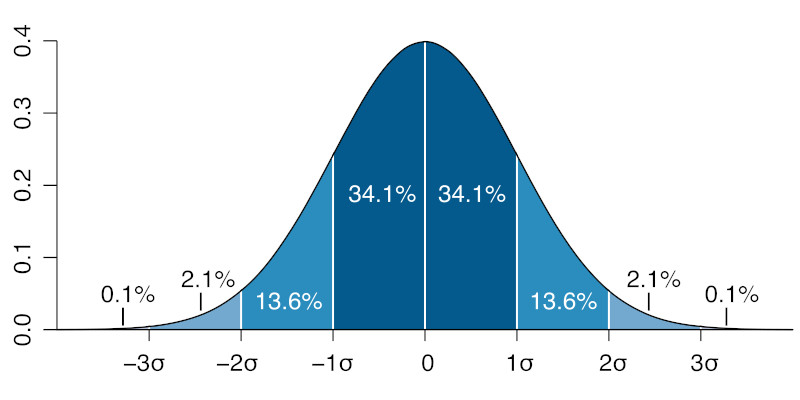

We’ve already seen how to generate continuous random numbers within a range, and also how to use those numbers to pick values from a pre-determined set of options.
Just to review, let’s use random() to generate a grid of ellipses with different, unpredictable, diameters:
We’re using random(0.2 * gridW, 0.8 * gridW) to pick random ellipse diameter values that are between \(20\%\) and \(80\%\) of the grid width.
Calling random(min, max) gives us uniformly distributed values: any value between its min and max parameters are equally likely to occur.
We can visually this in a couple of ways.
In one-dimension, using a random variable to set the diameter of ellipses. All values between \(0\) and width are equally likely:
We can rerun the sketch and get different results, but overall, the ellipses don’t seem to follow any pattern.
We can also visually the distribution of the random() function in two-dimensions, using random variables to pick x and y positions for ellipses. All positions on the canvas are equally likely:
And, again, we can rerun the sketch and get slightly different results, but it will always look like the ellipses are equally spread throughout our canvas.
Uniform random variables are strongly related to choice events like rolling a die, picking a card from a deck, or thinking of a number between \(0\) and \(100\).
This isn’t the only way randomness occurs though. If we look at values for people’s heights, shoe sizes and blood pressure, or even something like wine pH levels and subway occupancy throughout the day, we’ll see that even though exact values are not predictable, these events or measurements tend to have a non-uniform distribution where certain values are more likely to occur.
Subway occupancy, wine pH levels, shoe size and blood pressure are examples of variables that follow a normal distribution (sometimes also called a Gaussian distribution). This might sound familiar from algebra or statistics class, but just to review: in a normal distribution, not all numbers are equally likely to occur; the distribution has a specific expected value and a spread.
The expected value is the average, or mean, value of the distribution, usually denoted by the greek letter mu \(\mu\). If we sample a bunch of numbers from a normally distributed event, we would expect half of the numbers to be larger than the mean, and the other half to be smaller.
The spread of a distribution is officially called a standard deviation. It’s commonly denoted by the greek letter sigma \(\sigma\), and it specifies how likely numbers far from the mean are to occur. This plot shows the relationship between mean and standard deviation for a gaussian distribution with mean \(0\) and standard deviation \(\sigma\):

What this graph shows is that about \(68\%\) of the values chosen from a gaussian distribution will be within \(1\) standard deviation from the mean, about \(95\%\) will be within \(2\) standard deviations, and almost all of the values (\(99.6\%\) of them) will be within \(3\) standard deviations from the mean.
We can check this with the p5.js randomGaussian() function.
Let’s use it to repeat the same two visualizations we used for the random() function above.
In one-dimension, let’s use \(0\) for the mean and \(\frac{width}{3}\) for the standard deviation for our ellipses’s diameters. One way to pick the value for the standard deviation is to take whatever we would like to be the largest value returned by randomGaussian() and divide it by \(3\). We want our ellipses to have a maximum diameter of width, so our standard deviation should be \(\frac{1}{3}\) of that value. This should make it so that most of the ellipses fall within the canvas:
In two-dimensions, we want our ellipses to be clustered around the center and mostly stay within the canvas. This makes our means \(\frac{width}{2}\) and \(\frac{height}{2}\), and since we would like our x position to be at most \(\frac{width}{2}\) away from the mean (at \(0\) or width), we divide \(\frac{width}{2}\) by \(3\) to get the standard deviation. The same logic is used to calculate the standard deviation for the y position and the values we’ll use for \(\sigma\) are: \(\frac{width}{6}\) and \(\frac{height}{6}\).
From the reasoning above we can see that a more general way to pick standard deviation values when using randomGaussian() is: \(\sigma = \frac{max - mean}{3}\).
We can even plot some markers at \(1\), \(2\) and \(3\) standard deviations to check that the values returned by the randomGaussian() function follow the expected \(68\%\), \(95\%\) and \(99.6\%\) distributions.
In the sketch above, \(68\%\) of the ellipses should be within the smallest white circle, \(27\%\) should be between the two smallest white circles, \(4\%\) between the two largest white circles, and very rarely we’ll see an ellipse outside the largest white circle. So, \(68\%\) of the ellipses are within \(1\) \(\sigma\) from the mean, \(95\%\) (\(68\% + 27\%\)) are within \(2\) \(\sigma\) and almost all of them are within \(3\) \(\sigma\) from the mean of \(0\).
We can see something similar in our two-dimensional example:
Finally, let’s see what happens if we use a gaussian distribution to pick ellipse diameters for the grid pattern we looked at in the beginning of this section. Let’s try \(0\) for the mean and \(\frac{gridW}{3}\) for the standard deviation (since we want our largest possible diameter to be gridW):
Since it’s very unlikely that we’ll get \(2\) maximum diameter ellipses next to each other, we can even experiment with slightly larger values for \(\sigma\), like \(\frac{gridW}{2.5}\) or even \(\frac{gridW}{2}\).
Try it out above ☝️ and see if the difference is noticeable!
Uniform and gaussian distributions aren’t the only ways of creating random numbers.
The random numbers generated by the random() and randomGaussian() functions are unpredictable because knowing something about one of the numbers doesn’t say anything about the next. But, what if we want to use sequences of random numbers where each number is somehow related to the previous value in the sequence?
Of course, p5.js has another function for generating these types of random numbers: noise().
Noise is different from the other functions because its parameters aren’t used to specify anything about the distribution of the numbers, or their range, but instead to determine how close sequentially chosen numbers should be.
For example, calling noise with the same parameter during a sketch:
print(noise(1010));
print(noise(1010));
print(noise(1010));
Will give the same number (always between \(0\) and \(1\)):
0.63951621
0.63951621
0.63951621
But, the parameter can be used to determine how similar two or more consecutive random numbers should be.
For example, calling noise with consecutive whole numbers:
print(noise(1010));
print(noise(1011));
print(noise(1012));
Gives a sequence of different numbers that are all within \(0.2\) of each other:
0.40770879
0.49712939
0.29742239
Calling noise with numbers that only vary by \(0.1\):
print(noise(1010.0));
print(noise(1010.1));
print(noise(1010.2));
we get a sequence of different numbers that are more alike, and vary by, maybe, \(0.02\):
0.36829471
0.38614744
0.39177833
So… How do we use it?
Well, noise() is useful because we can use values we have in our sketch to control by how much the numbers in the sequence will vary.
A simple example, similar to the ones above, would be to use noise() to pick random x and y locations for some ellipses.
Let’s say we start with something like this:
for (let i = 0; i < width; i++) {
let x = width * noise(i);
let y = height * noise(i);
ellipse(x, y, 10);
}
Since the values returned by noise() are in the range \([0, 1]\), we multiply them by width and height to get values that stretch across our whole canvas:
Since noise() returns the same value when called with the same parameter, the \(x\) and \(y\) variables in the sketch above will always have the same value and our ellipses get drawn in a diagonal line. Boring.
One way to fix this is to give the noise() function for each variable a different, fixed offset, like:
for (let i = 0; i < width; i++) {
let x = width * noise(1010 + i);
let y = height * noise(2020 + i);
ellipse(x, y, 10);
}
This is better, but it still looks a lot like the random() or the randomGaussian() functions. This is because the parameter that we are giving to the noise() function vary by \(1\) between iterations, and from our exploration above we saw that calling noise() with consecutive whole numbers will return numbers that change by about \(0.2\) between consecutive calls.
This is quite a lot. \(0.2\) is \(\frac{1}{5}\) of our total range, and the resulting sequence can look pretty much like random() or randomGaussian().
We can make consecutive numbers more similar by incrementing the parameter to noise by \(0.01\) instead of \(1\):
for (let i = 0; i < width; i++) {
let x = width * noise(1010 + i / 100);
let y = height * noise(2020 + i / 100);
ellipse(x, y, 10);
}
Oh, whoa. So now both the x and y locations for our ellipses vary by small amounts between each iteration, and since each value is slightly related to the previous one we get something that looks like the trail of a moving ellipse.
Pretty cool !
We can even increase the number of iterations above from width to 4 * width or 10 * width to get longer trails.
Try it out ☝️ !
Let’s see what noise() looks like in the one-dimension visualization. We’ll again use noise(i / 100) so that our diameter doesn’t vary too much between iterations:
We can see that the diameters vary by small smalls between iterations and we almost get patterns when all the ellipses overlap.
Let’s try noise() in our grid example:
Maybe if we use y / 100 ? …
Or, (x + y) / 100 ?
Even thought the last one looks kind of cool, all of these are predictable: either their rows, columns or diagonals are the same. Which makes sense since we’re calling noise() with repeating values coming from x, y or x + y.
Unlike the 2D case above where we used separate calls to noise() to get values for x and y locations, now we would like to get one value for diameter based on two values for location. Luckily, we can just call noise() with two parameters, like this:
let d = noise(x / 100, y / 100);
Now, the noise() function will take both sequences into account when it returns a value, so even if one of the values stays the same, the other changes and the resulting value will change:
Pretty cool. We’ll soon see how to use this version of 2D and even 3D noise.
random(min, max): gives us uniformly distributed values between min and max, where every value is equally likely to occur.
randomGaussian(\(\mu\), \(\sigma\)): gives us normally distributed values clustered around \(\mu\), and with most of the values between \(\mu - 3\sigma\) and \(\mu + 3\sigma\).
noise(i, j): gives us sequences of values between \(0\) and \(1\), that don’t vary much between consecutive calls when i and j are sequences of gradually increasing (or decreasing) values.
random()
randomGaussian()
noise()
random()
randomGaussian()
noise()
random()
randomGaussian()
noise()